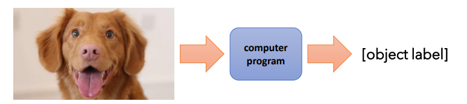

深度学习-CS182-Note：Lec-1-Introduction
深度学习的强大在于，它能够从数据中自动学习数据的表示。
什么是机器学习？
考虑实现这样一个识别狗狗的程序。应当如何实现呢？

在机器学习中，给定一系列数据，我们不手动地一个个定义输入→输出的映射关系（规则），而是创造一个能通过数据对该映射进行学习的程序。
核心的想法是，如果规则太过复杂/有诸多反例，或甚至于我们不知道规则是什么，那么提供例子还容易些。

识别狗狗的任务感觉可能太复杂，但这其实跟二分类任务差不多：如果在线的下方，就给出⭕，如果在线的上方，就给出❎，在这里这条直线可以由函数得到，我们需要程序学习到θ\thetaθ参数，也就是找到使上述函数正确工作的向量。
接下来问题就在于，怎样进行参数化？换句话说，从狗狗到一系列点/向量，何以可能？
“浅度”学习（Shallow learning）

在回答上面的问题之前，先来探讨一下什么是“浅度”学习。采取这种做法，类似于某种折中策略：我们不手写规则了，但是我们手写特征（feature）。这仍会带来问题，因为提取好的特征并不容易。
怎么进行改进呢？那就是，把提取特征的工作同样交给程序。


这就是为什么当今的图像识别网络是多层的：低层识别较低级的特征，高层（基于前面的变换得到的信息）识别更加高级的特征：更抽象，对扰动更不敏感，更易用于预测。
什么是深度学习？
最后，什么是深度学习？
深度学习是使用多层表示的机器学习（往往使用神经网络模型），且每一层的参数多基于整个任务的优化进行训练（所以有时又叫端到端学习）。
本博客所有文章除特别声明外，均采用 CC BY-NC-SA 4.0 许可协议。转载请注明来自 Vanilla Tiramisu's Cookbook！